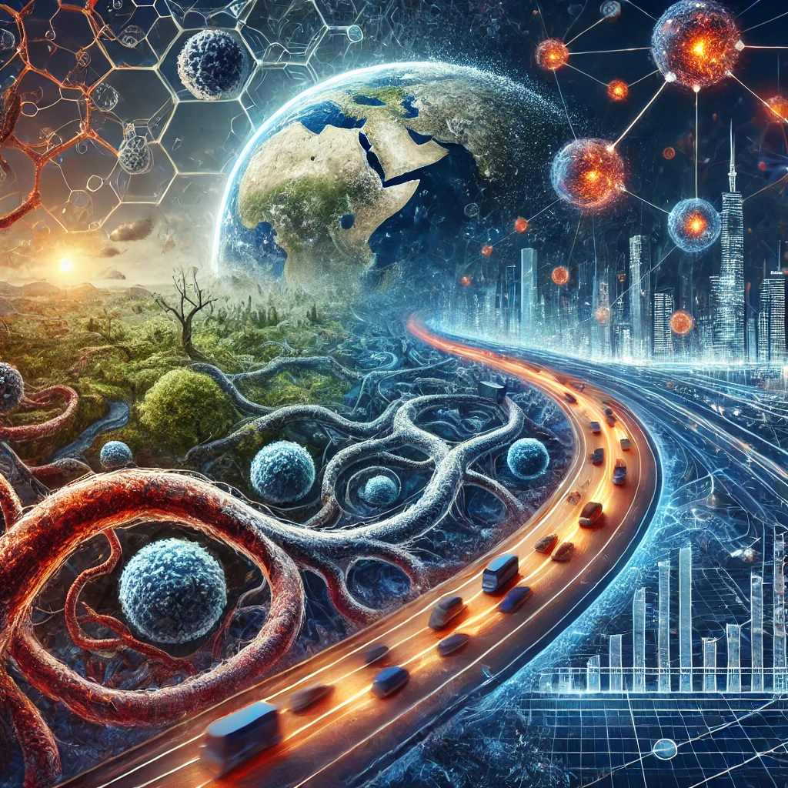

SCALE
목차
작가
제프리 웨스트
출판일
2021.01.01
감상평에 대한 AI그림
작가가 물리학자로서의 시각을 활용해 복잡계 시스템이 규모와 관련된 일정한 패턴을 따르는 이유를 설명하는 것이 매우 흥미로웠다. 예를 들어, 생명체의 대사율이 크기에 따라 특정한 비율로 변화하는 것처럼, 도심의 인프라, 기업의 성과도 규모에 따라 예측 가능한 패턴을 보인다는 내용을 담고 있는데 이런 내용을 토대로 내가 과학, 경제, 생태계를 아우르는 시각으로 세상을 볼 수 있었던 책이었던 것 같다.

감상평에 대한 AI평가
우리가 일상적으로 경험하는 다양한 현상들을 새로운 시각으로 이해하는 데 큰 도움이 될 수 있을 것 같습니다.
자연과 인간 사회가 서로 다른 분야처럼 보일 수 있지만, 그들 사이에 공통적인 패턴이 있다는 점에서 과학과 경제, 생태계를 통합적으로 바라볼 수 있다는 게 강력한 통찰력을 제공하는 것 같아요.